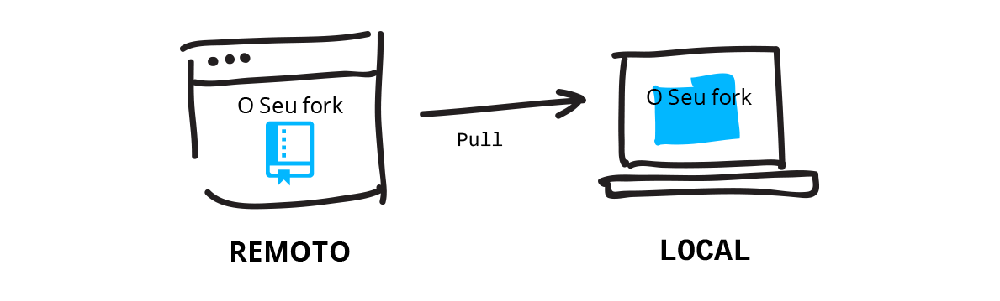

Deixe seus arquivos atualizados por receber atualizações dos colaboradores.
Fazendo Pull de um Remoto
Se você está trabalhando junto com outras pessoas, você precisa sempre estar atualizado com as modificações mais recentes. Portanto você deve fazer pull de todas as mudanças que foram enviadas ao repositório central no GitHub.
O que o Reporobot tem feito?
Veja se o Reporobot fez alguma mudança no seu branch por fazer pull das possíveis mudanças do remoto chamado "origin" no GitHub:
git pull <NOMEDOREMOTO> <NOMEDOBRANCH>
Se nada mudou, ele irá dizer 'Already up-to-date' (já está atualizado). Se houverem mudanças, o Git irá fazer o merge (união) destas com a sua versão local.
O Reporobot fez alguma mudança? O Git avisa quando há mudanças. Você pode abrir este arquivo e ver a mudança que o Reporobot fez. Surpresa, Reporobot é um artista!
- Checa o estado do Git
- Recebe alterações (pull) de um branch remoto
- Vê as mudanças de um remoto antes de recebê-las
git status
git pull <NOMEDOREMOTO> <NOMEDOBRANCH>
git fetch --dry-run